Research
Research Projects
CERBERE : Caméra évènementielle pour la pERception d’oBjEts Rapides autour du véhicule autonomE.
Financement : ANR AAP Générique PRCE 2021.
Rôle : Coordinateur du projet.
Durée du projet : 48 mois (2022-2025).
Porteur : LITIS.
Partenaires Académiques : MIS, ImViA.
Partenaires Industriels : YUMAIN.
Rôle : Coordinateur du projet.
Durée du projet : 48 mois (2022-2025).
Porteur : LITIS.
Partenaires Académiques : MIS, ImViA.
Partenaires Industriels : YUMAIN.
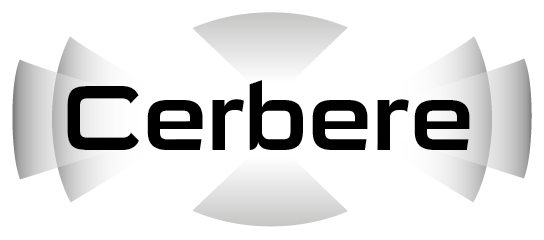
Description : Un des principaux défis technologiques pour le véhicule autonome est la compréhension de son environnement, qui est généralement perçu par des capteurs tels que les lidars, radars et les caméras. L’objectif principal de ce projet est l’exploitation d’un capteur en rupture avec les solutions existantes pour la perception du véhicule autonome : la caméra évènementielle.
La caméra évènementielle est un capteur bio-inspiré qui mesure les changements d’illumination au niveau des pixels et de façon asynchrone. Cette propriété la rende particulièrement intéressante pour le véhicule autonome puisqu’elle peut répondre aux verrous qui subsistent dans les scénarios de conduite autonome : scène avec de hautes dynamiques (sortie de tunnel par exemple), latence et vitesse de détection des obstacles (autres véhicules, piétons), tout en prenant en compte les contraintes de puissance de calcul et de flux de données limités imposées par le véhicule autonome.
ADAV : Adaptive multimodal data fusion for object detection in adverse weather conditions for autonomous Vehicles.
Financement : ANR AAP JCJC 2024.
Rôle : Participation scientifique, Responsable d'un workpackage.
Durée du projet : 48 mois (2025-2028).
Porteur : LITIS.
Rôle : Participation scientifique, Responsable d'un workpackage.
Durée du projet : 48 mois (2025-2028).
Porteur : LITIS.
Description : Les systèmes de perception multimodale (caméras, radars, lidars, capteurs infrarouges) sont de plus en plus utilisés dans les applications de mobilité autonome (véhicules, drones) et de surveillance, en particulier pour surmonter les situations de visibilité dégradée (brouillard, pluie, faible luminosité). Dans ces conditions, les données provenant des différents capteurs peuvent être sujettes à des incertitudes importantes qui impactent la fiabilité des décisions prises par les systèmes automatisés. Le projet ANR AdaV a pour but d’étudier les possibilités d’extraction de caractéristiques environnementales pour l’amélioration de la fusion adaptative des modalités pour la détection d’objets multiples.
INARI : vIsion multimodale pour une NAvigation et une commande Robuste de véhIcule autonome.
Description : Le projet INARI vise tout d'abord à explorer l’efficacité des différentes modalités utilisées habituellement pour la fusion de données multi capteurs et de tirer profit de l’information physique offerte par l’imagerie non conventionnelle de polarisation pour la détection de l’état de la chaussée. La fusion de modalités selon la condition météo allégera le processus de fusion par le fait que seules les modalités à haute réponse seront considérées dans le processus de fusion. Ceci est possible grâce à l’estimation de l’incertitude et de la fiabilité des capteurs en présence d’une météo dégradée, le choix des modalités à fusionner deviendra automatique selon les conditions extérieures d’acquisition de données.
La deuxième partie du projet INARI concerne la détermination de l’adhérence du véhicule selon l’état de la chaussée. En effet, il a été démontré que l’imagerie polarimétrique, via ses paramètres physiques (degrés et angle de polarisation), est capable de classifier la chaussée selon son état (présence de verglas, chaussée mouillée, chaussée sèche). Une fois l’état déterminé, il convient d’estimer le coefficient d’adhérence du véhicule et ensuite d’établir la commande adéquate pour une navigation plus robuste et plus sécurisée..
SCOPES : Sémantique COllaborative pour une Perception Evidentielle de Situation.
Financement : ANR ASTRID Robotique.
Rôle : Responsable Scientifique LITIS.
Durée du projet : 30 mois (2022-2024).
Porteur : LINEACT CESI.
Partenaires Académiques : LITIS, IRSEEM.
Partenaires Industriels : aucun.
Rôle : Responsable Scientifique LITIS.
Durée du projet : 30 mois (2022-2024).
Porteur : LINEACT CESI.
Partenaires Académiques : LITIS, IRSEEM.
Partenaires Industriels : aucun.
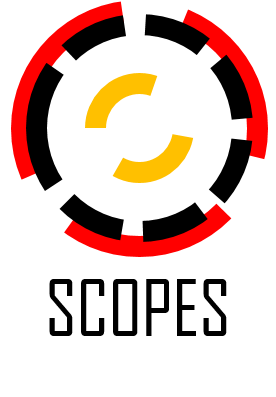
Description : SCOPES s’inscrit dans une problématique d’intégration d’informations visuelles collectées depuis une flotte de véhicules autonomes intelligents (AIV). Cette intégration et mutualisation permet de produire de nouvelles informations à intégrer dans le jumeau numérique de l’environnement exploré. SCOPES propose deux contributions importantes à la production d’un jumeau numérique de confiance : l’intégration de l’incertitude dans le jumeau numérique restitué grâce à l’information obtenue par l’agrégation des différents points de vue; et une estimation mutualisée et robuste des positions des informations collectées par les différents AIV. Ces informations doivent permettre d’augmenter la prise de décision humaine par l’apport de nouvelles informations. Elles contribuent à augmenter la confiance du décideur dans l’information produite par les différentes Intelligences Artificielles (IA) exploitées dans le système et les sous-systèmes du jumeau numérique.
COLIBRY : COLlaborative semantIc roBotics for industRY 5.0.
Financement : Dispositif Recherche, Métropôle Rouen Normandie.
Rôle : Responsable Scientifique LITIS.
Durée du projet : 24 mois (2022-2024).
Porteur : IRSEEM.
Partenaires Académiques : LITIS, LINEACT CESI.
Partenaires Industriels : aucun.
Rôle : Responsable Scientifique LITIS.
Durée du projet : 24 mois (2022-2024).
Porteur : IRSEEM.
Partenaires Académiques : LITIS, LINEACT CESI.
Partenaires Industriels : aucun.
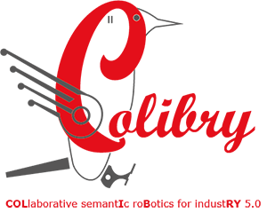
Description : Le projet COLIBRY d’une durée de 24 mois, s’inscrit dans les compétences métropolitaines en lien avec “l’Industrie du Futur” et “l’Innovation industrielle” puisqu’il met les enjeux de la robotique collaborative et du jumeau numérique au cœur de son plan de travail. Le contexte applicatif des ateliers de production flexibles et reconfigurables sont ciblés. Un focus plus spécifique sera fait sur des environnements industriels contraints tels que ceux de l’Industrie Pharmaceutique et de la Fabrication Additive métallique ou par polymères, pour lesquels la robotique, en conjonction avec le jumeau numérique a un intérêt tout particulier.
Nos contributions s’appuieront sur l’utilisation de plusieurs robots (dont les typologies seront différentes : bras articulés, robots mobiles), de leur capacité de perception et de la sémantique des objets présents dans l’environnement industriel pour mettre à jour en temps-réel le jumeau numérique.
ROSEAU : RObotics SEnsorimotor loops to weed AUtonomously.
Financement : Challenge ANR ROSE (Robotique et capteurs au Service d'Ecophyto).
Rôle : Direction de la thèse de Hassan Nehme.
Durée du projet : 48 mois (2018-2021).
Porteur : SITIA.
Partenaires Académiques : IRSEEM, UMR AgroEcologie.
Partenaires Industriels : SITIA, Chambre régionale d'agriculture de Bretagne, Chambre d'agriculture de Pays de Loire.
Rôle : Direction de la thèse de Hassan Nehme.
Durée du projet : 48 mois (2018-2021).
Porteur : SITIA.
Partenaires Académiques : IRSEEM, UMR AgroEcologie.
Partenaires Industriels : SITIA, Chambre régionale d'agriculture de Bretagne, Chambre d'agriculture de Pays de Loire.
Description : Le projet ROSEAU vise à développer des outils pour réaliser des opérations de désherbage sur le rang.
Ces outils interviennent sur 3 composantes (perception/décision/action) qui sont les 3 concepts fondamentaux des boucles sensorimotrices. Les boucles sensorimotrices sont des boucles de commande qui lient les capteurs (« sensori… ») aux actionneurs (« …motrices ») via des couches de décisions à plusieurs niveaux, allant du reflexe (boucles très rapides, de l’ordre du centième de seconde) aux réflexions élaborées (pouvant prendre plusieurs heures).
L’objectif de ROSEAU est de décliner ce cadre aux opérations de désherbage sur le rang, avec des outils allant de la détection/éradication des adventices à la volée jusqu’à l’optimisation des itinéraires techniques en croisant les proliférations adventices et les fenêtres d’interventions.
LOCADYN : LOCAlisation et sécurisation DYNamique des flux de personnes, d'objets et d'information sur les sites industriels.
Financement : RIN Recherche Région Normandie + FEDERRôle : Responsable Scientifique IRSEEM, Encadrement d'un post-doctorant, Encadrement d'un Projet de fin d'Etudes.
Durée du projet : 24 mois (2017-2019).
Porteur : IRSEEM.
Partenaires Académiques : IRSEEM, LINEACT.
Partenaires Industriels : aucun.
Description : L’amélioration de la performance et le renforcement des conditions de sécurité sur des sites industriels
représentent des enjeux majeurs et nécessitent notamment de pouvoir localiser de manière dynamique les personnes et les biens sur le site. Actuellement,
la sécurisation et la réglementation des accès à des zones avec des caractéristiques différentes (types de tâches, niveau de risque ou de confidentialité...)
sont souvent réalisés avec des portes à badges ou des systèmes de barrières. Ces moyens présentent plusieurs failles face aux déplacements inopportuns de
personnes, mais également d’objets ou d’outils. De plus, on constate une utilisation croissante de dispositifs technologiques nécessitant une localisation
précise dans l’environnement industriel tels que des AGVs (robots mobiles ou drones) ou des dispositifs de réalité augmentée.
Il devient donc indispensable d’avoir des outils permettant de gérer de manière dynamique ces flux de personnes ou de biens associés à des technologies
de localisation précise. L’utilisation des nouvelles technologies d’informations et de communications permet de mettre en place un suivi dynamique des
déplacements des personnes et de vérifier en temps réel leurs autorisations et habilitations. Etant donné leur étendue, le déploiement d’infrastructure
de localisation couvrant tout un site est souvent une solution à écarter. L’évolution des technologies embarquées permet à moyen terme d’envisager des
systèmes de localisation autonome. Plusieurs solutions technologiques seront donc étudiées dans ce projet pour identifier rapidement et efficacement des
personnes pouvant se retrouver dans des zones non-autorisées ou faire des tâches pour lesquelles elles ne sont pas formées. En plus du suivi dynamique des
personnes, ces solutions peuvent résoudre des problèmes de déplacement d’objets et d’outils dans les ateliers de production.
De plus, la mise en place d’un outil de planification et d’ordonnancement des activités et tâches de production ou de maintenance permettra également
d’éviter les transferts informels d’informations ou de personnes.
COPTER : COoPération drone véhicule TERrestre.
Financement : Région Haute-Normandie + FEDER.Rôle : Direction de la thèse de Louis Lecrosnier.
Durée du projet : 48 mois (2016-2020).
Porteur : IRSEEM.
Partenaires Académiques : IRSEEM, LITIS.
Partenaires Industriels : CEREMA
Description : Depuis quelques années, on constate une diffusion croissante de la robotique mobile dans
l’ensemble des activités industrielles et de services : automobile, aéronautique, énergie, logistique, sécurité, santé,… Aujourd’hui les systèmes
électroniques embarqués dans les plateformes robotiques ont une capacité de traitement équivalente à la puissance d’un ordinateur d’il y a quelques
années. Ces capacités chaque jour croissantes permettent de rendre le système plus intelligent - autonome dans ses actions et coopératif avec les autres
machines – en le dotant de capacités (capteurs et logiciels) de perception, de communication, et de décisions. Dans ce contexte, le projet COPTER
s’intéresse à la coopération entre un drone (UAV) et un véhicule terrestre (voiture, robot mobile de type AGV) pour la perception dense de l’environnement.
L’utilisation des drones s’est effectivement largement répandue. Le concept de coopération drone - véhicule est viable en particulier sur un plan
réglementaire dans le cas d’un drone dit captif, c’est-à-dire relié au véhicule par un câble (capacité d’emport de charge plus importante, pas besoin d’un
document de navigabilité de DGAC contrairement au drone civil). L’idée est d’explorer les possibilités offertes par le couplage drone - véhicule pour la
perception de la scène vue du véhicule terrestre par l’utilisation d’un drone évoluant autour du véhicule. L’objectif est de fournir une reconstruction 3D
en discriminant la partie statique (infrastructure, bâtiments) mais aussi la partie dynamique (véhicules, piétons, …). Les applications sont multiples,
dans ce projet on se propose d’en explorer deux :
- l’aide à la navigation d’un véhicule autonome, la perception dense pouvant être utilisée pour aider le véhicule à définir son espace libre et planifier sa trajectoire ou s’il a une connaissance a priori de la scène dans laquelle il évolue, lui permettre de s’y relocaliser précisément.
- l’utilisation des données sur les entrants dynamiques afin de recueillir des informations servant à l’analyse du trafic, avec un focus particulier sur les mobiles qui peuvent être difficiles à détecter et à suivre depuis le véhicule terrestre uniquement (deux-roues et piétons par exemple),
VIATIC² : VIabilité et AuTonomie des systèmes en environnement Incertain et Contraint 2.
Financement : ANR ASTRID MATURATION (Accompagnement Spécifique des Travaux de Recherches et d’Innovation Défense : Maturation et valorisation).
Rôle : Coordinateur du projet, Responsable scientifique IRSEEM, Encadrement de deux ingénieurs de recherche.
Durée du projet : 36 mois (2014-2018).
Porteur : IRSEEM.
Partenaires Académiques : IRSEEM.
Partenaires Industriels : MBDA, VIMADES.
Rôle : Coordinateur du projet, Responsable scientifique IRSEEM, Encadrement de deux ingénieurs de recherche.
Durée du projet : 36 mois (2014-2018).
Porteur : IRSEEM.
Partenaires Académiques : IRSEEM.
Partenaires Industriels : MBDA, VIMADES.
Description : Le projet VIATIC 2 avait pour objectif d’approfondir et consolider les résultats prometteurs obtenus dans le projet initial VIATIC. Les travaux porteraient sur la réalisation d’un système de coordination d’un groupe de véhicules (terrestres, maritimes ou aériens) ayant pour mission d’atteindre un ensemble de cibles (fixes ou mobiles). Le système de coordination proposé était composé de deux sous-systèmes principaux : un module de planification de trajectoires et un module d’allocation et réallocation. L’un des points forts de la solution proposée consistait à réunir les tâches de planification et d’allocation et à faire dialoguer les deux sous-systèmes, habituellement étudiés et conçus séparément.

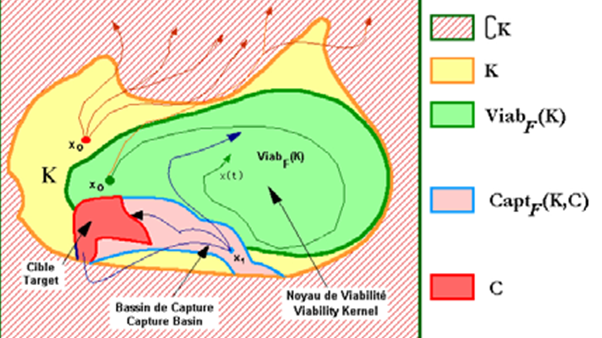
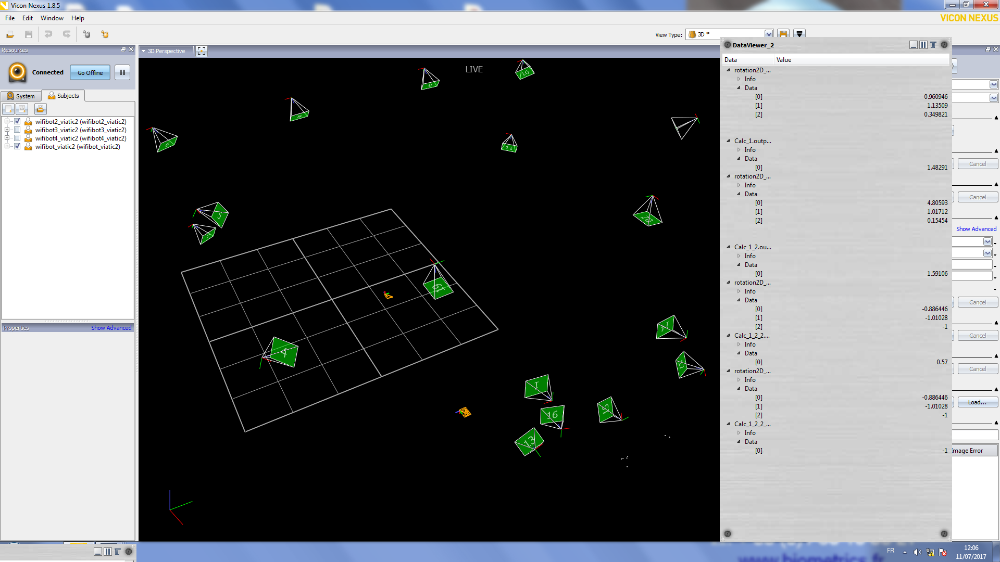
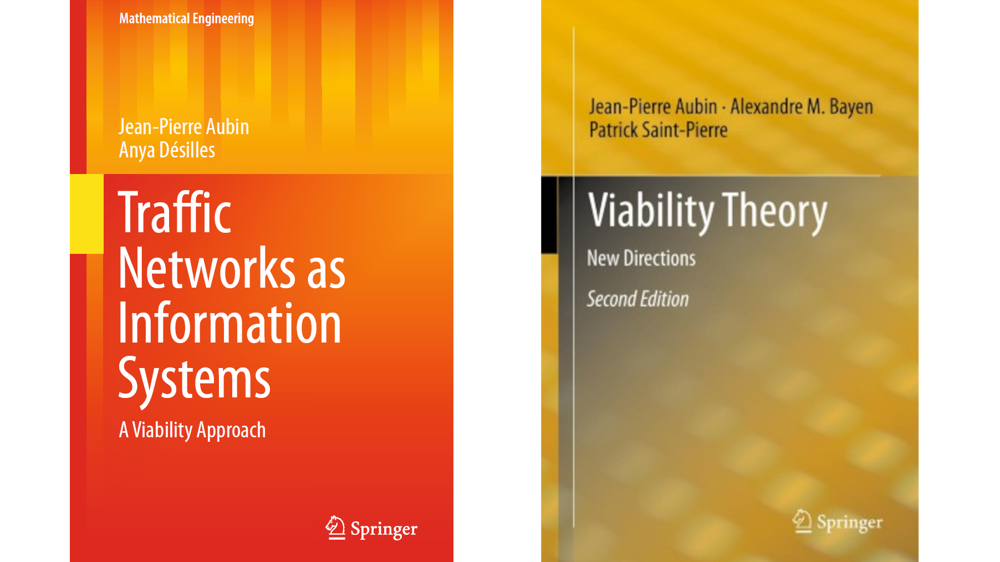
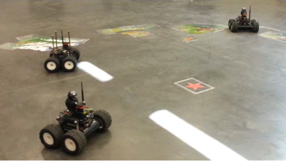
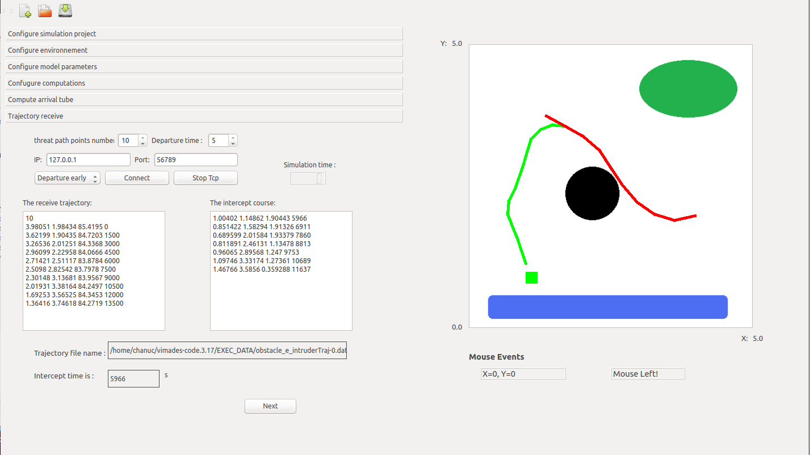
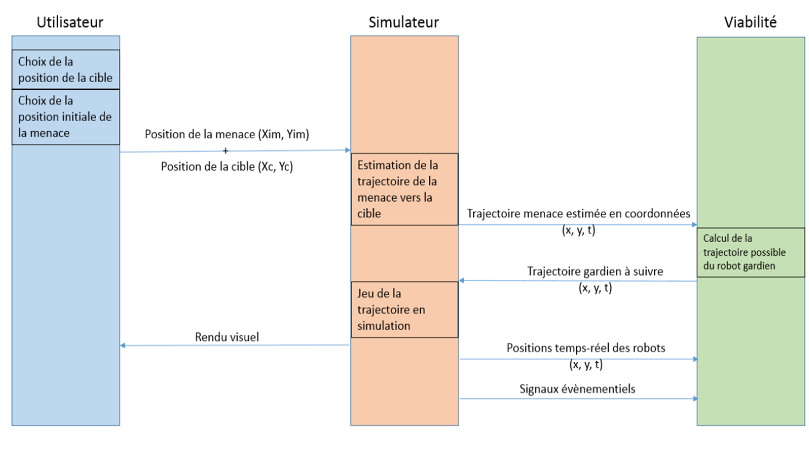
ARGOS : Autonomous Robot for Gas and Oil Sites.
Financement : Challenge ANR / Total.
Rôle : Responsable de la partie vision (détection et lecture des jauges, vannes, etc), Encadrement de la thèse de Pierre Merriaux, Encadrement d'un post-doctorant.
Durée du projet : 36 mois (2014-2017).
Porteur : IRSEEM.
Partenaires Académiques : IRSEEM.
Partenaires Industriels : Sominex.
Rôle : Responsable de la partie vision (détection et lecture des jauges, vannes, etc), Encadrement de la thèse de Pierre Merriaux, Encadrement d'un post-doctorant.
Durée du projet : 36 mois (2014-2017).
Porteur : IRSEEM.
Partenaires Académiques : IRSEEM.
Partenaires Industriels : Sominex.
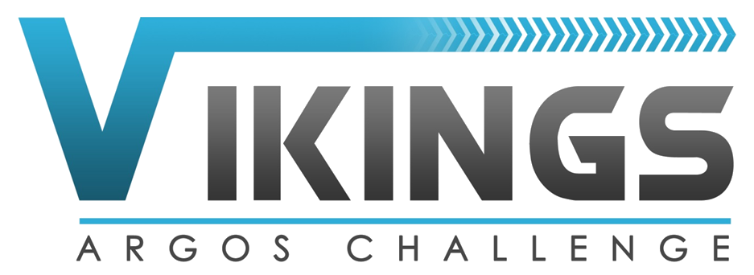
Description : L'objectif du Challenge ARGOS est de favoriser le développement de moyens robotiques
avancés évoluant dans des environnements d'exploitation de pétrole et de gaz. Le programme est basé sur des systèmes robotiques pouvant fonctionner en
toute sécurité et en autonomie complète, ou supervisée, sur terre ou sur un site de production offshore (éventuellement en atmosphères explosives
dangereuses). L'objectif global est d'améliorer la sécurité des opérateurs sur les sites de production isolés. Cinq équipes originaires d'Autriche
et d'Allemagne (ARGONAUTS), d'Espagne et du Portugal (FOXIRIS), de France (VIKINGS), du Japon (AIR-K) et de Suisse (LIO) se sont confrontées pour
créer des robots capables d'effectuer des tâches d'inspection, détecter des anomalies et intervenir en situation d'urgence. L'IRSEEM s'est allié avec
la PME Sominex pour répondre à ce challenge en formant le consortium VIKINGS. Notre consortium a remporté les deux premières manches de cette
compétition en trois manches qui s'est déroulée de septembre 2014 à mars 2017.
VIATIC : VIabilité et AuTonomie des systèmes en environnement Incertain et Contraint.
Financement : ANR ASTRID (Accompagnement Spécifique des Travaux de Recherches et d’Innovation Défense).
Rôle : Responsable scientifique IRSEEM, encadrement d'un post-doctorant.
Durée du projet : 36 mois (2011-2014).
Porteur : IRSEEM.
Partenaires Académiques : IRSEEM, IMM Institut Marcel Mauss, LASTRE.
Partenaires Industriels : MBDA.
Rôle : Responsable scientifique IRSEEM, encadrement d'un post-doctorant.
Durée du projet : 36 mois (2011-2014).
Porteur : IRSEEM.
Partenaires Académiques : IRSEEM, IMM Institut Marcel Mauss, LASTRE.
Partenaires Industriels : MBDA.
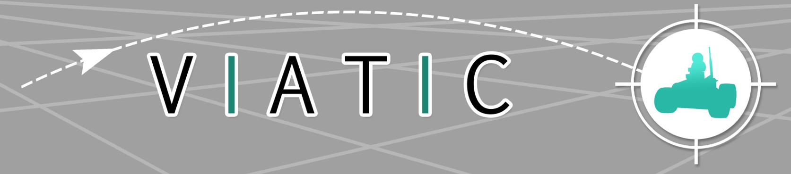
Description : Le projet VIATIC a pour objectif de réaliser une maquette d’un système de coordination
d’un groupe de robots autonomes ayant pour mission d’atteindre un ensemble de cibles faiblement mobiles et dont les positions ne sont pas précisément
connues. Il s’agit d’un problème multi-robots - multi-cibles ré allouables qui a un caractère fortement dual. Le problème est donc à la fois de
relocaliser des cibles pré renseignées dans le passé et d’allouer le robot le plus adapté pour une mission d’interception, de secours ou autre en
fonction du scénario envisagé. L’aspect connaissance imparfaite (carte de l’environnement incomplète) et imprécise (erreurs de localisation) est un
élément essentiel de ces scénarios.
Dans le domaine militaire, les algorithmes développés peuvent être appliqués à des problématiques d’interception de cibles faiblement mobiles
ré-allouables. Il s’agit de scénarios multi-missiles - multi-cibles demandant le développement de nouvelles stratégies de guidage
(formage de trajectoires mi-course) et d’allocation d’objectifs coopératifs qui pourront être appliqués à des attaques au sol en milieu urbain.
Dans le domaine civil, le scénario étudié est celui de la redistribution des véhicules électriques dotés de fonctions de pilotage autonome et
devant rejoindre une borne de recharge et/ou une place de stationnement. Il s’agit également de scénarios multi-véhicule – multi-cible pour
lesquels il faut déterminer les trajectoires viables en environnement contraint avec évitement de conflit et, comme pour le problème d’interception de
cible, d’allocation d’objectif coopératifs.
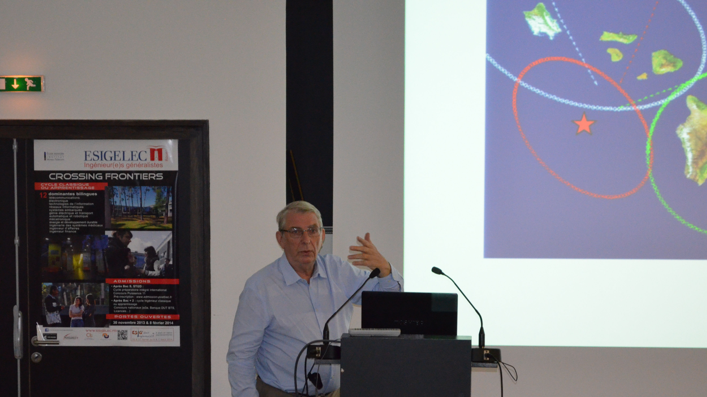
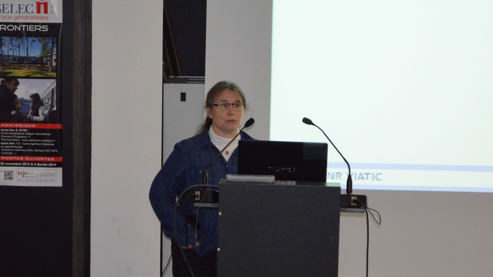
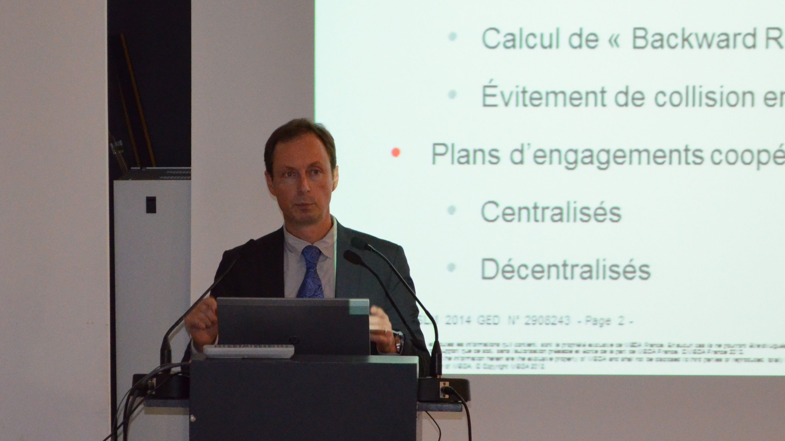

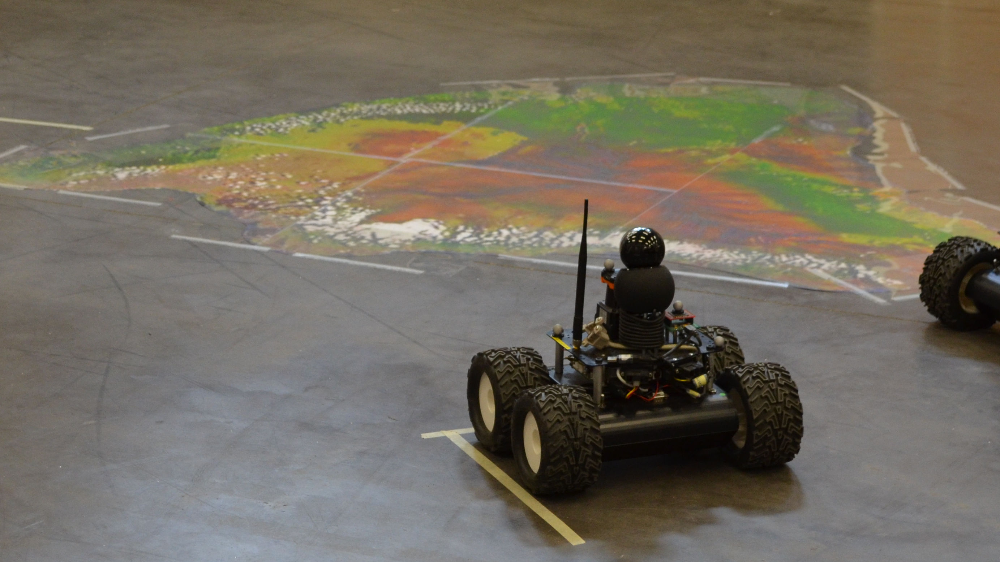
SAVEMORE : Smart Autonomous VEhicle for urban MObility using Renewable Energy.
Financement : Interreg IVA, GRR EEM.
Rôle : Encadrement de la thèse de Fabien Bonardi, Participation au développement du système de localisation (coffre de toit instrumenté).
Durée du projet : 24 mois (2013-2015).
Porteur : IRSEEM.
Partenaires Académiques : IRSEEM, LITIS, University of Kent (UK).
Partenaires Industriels : aucun.
Rôle : Encadrement de la thèse de Fabien Bonardi, Participation au développement du système de localisation (coffre de toit instrumenté).
Durée du projet : 24 mois (2013-2015).
Porteur : IRSEEM.
Partenaires Académiques : IRSEEM, LITIS, University of Kent (UK).
Partenaires Industriels : aucun.
Description : Le projet SAVEMORE vise à évaluer l’impact, la faisabilité et la valeur ajoutée d’un
petit véhicule intelligent et autonome de livraison en milieu urbain. L’objectif du projet SAVEMORE est double : il s’agit d’une part, d’analyser
comment une flotte de véhicules électriques peut être utilisée pour la livraison en ville et d’autre part d’établir la preuve de concept de véhicule
autonome pour la livraison en développant des solutions innovantes.
PLUTON : PLateforme Unifiée pour le Test des systèmes de visiON.
Financement : FEDER, GRR EEM.Rôle : Encadrement de la thèse de Rawia Mhiri.
Durée du projet : 30 mois (2010-2014).
Porteur : IRSEEM.
Partenaires Académiques : IRSEEM, LITIS.
Partenaires Industriels : aucun.
Description : Depuis une dizaine d’années, on constate une augmentation massive de l’utilisation
des systèmes de vision dans de nombreux domaines : vidéosurveillance, contrôle industriel, véhicule intelligent, relevé d’architecture, etc.
L’énorme quantité de données que peut potentiellement fournir une solution basée vision pose un problème de taille, celui de son traitement.
On peut prendre comme exemple les solutions déployées pour la vidéosurveillance et utilisées de façon massive en Angleterre en particulier :
le constat est aujourd’hui un effet de saturation des centres de traitement qui se retrouvent submergés d’informations collectées.
Les systèmes doivent donc devenir intelligents avec l’introduction de traitements automatisés. Idéalement, ces traitements doivent être embarqués,
ce qui pose d’autres défis, ceux de l’adéquation entre l'architecture du calculateur embarqué et des algorithmes (concept de caméra intelligente).
Ces solutions sont de plus en plus présentes sur le marché. Les architectures matérielles embarquées sont multiples : architecture basée PC, achitecture
basée calculateur dédié (DSP, FPGA), architecture propriétaire (System On Chip), etc.
Devant la prolifération des systèmes de vision pour des applications industrielles, apparait la nécessité de pouvoir qualifier et valider une chaine
complète, depuis le capteur jusqu’aux sorties fournies par le logiciel de traitement. Une demande émerge autour de moyens de test pour évaluer
la performance des sous-systèmes (caméras, objectifs, …) mais aussi celle de systèmes complets (capteur + algorithmes de traitement).
L’objectif était de se doter d’une plateforme dédiée à l’évaluation et à la validation de solutions industrielles basées sur les systèmes de vision.
MIRIADE : MIlitarisation de la RestItution d'Attitude Déduite des Etoiles
Financement : DGA RAPID (Régime d’APpui à l’Innovation Duale) .Rôle : Responsable scientifique IRSEEM, Encadrement d'un Ingénieur de Recherche.
Durée du projet : 24 mois (2009-2011).
Porteur : Starnav.
Partenaires Académiques : IRSEEM.
Partenaires Industriels : Starnav, Sominex.
Description : Développement d'un système de visée stellaire diurne.
Responsibility for research platforms
PERMIS : Plateforme Expérimentale en Robotique Mobile, Intelligente et Systèmes.
Financement : Métropôle Rouen Normandie.
Rôle : Co-responsable de la plateforme.
Création de la plateforme : 2021.
Porteur : INSA Rouen Normandie - LITIS.
Rôle : Co-responsable de la plateforme.
Création de la plateforme : 2021.
Porteur : INSA Rouen Normandie - LITIS.
Description : PERMIS est une Plateforme Expérimentale en Robotique Mobile, Intelligente et Systèmes. C'est une plateforme dédiée principalement à la formation par la recherche sur des projets autour de la navigation autonome en conditions dégradées et des IHM.
PVAC : Plateforme Véhicule Autonome et Connecté.
Financement : CPER - CPIER.
Rôle : Co-responsable de la plateforme.
Création de la plateforme : 2022.
Porteur : INSA Rouen Normandie - LITIS.
Rôle : Co-responsable de la plateforme.
Création de la plateforme : 2022.
Porteur : INSA Rouen Normandie - LITIS.
Description : .
Valorization of research through industrial contracts
- TRANSDEV (2017-2019): Development of a lidar localization algorithm for autonomous vehicle experiments as part of the Rouen Normandy Autonomous Lab.
- ORANO (2016-2017): Development of an ROV localization system from fisheye cameras.
- PSA (2016-2017): Development of a validation tool for ADAS.